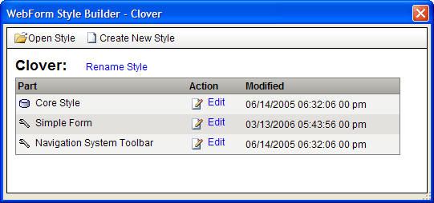
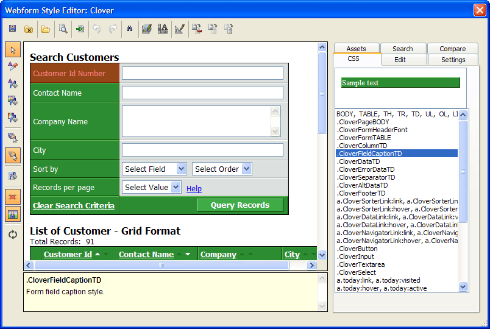
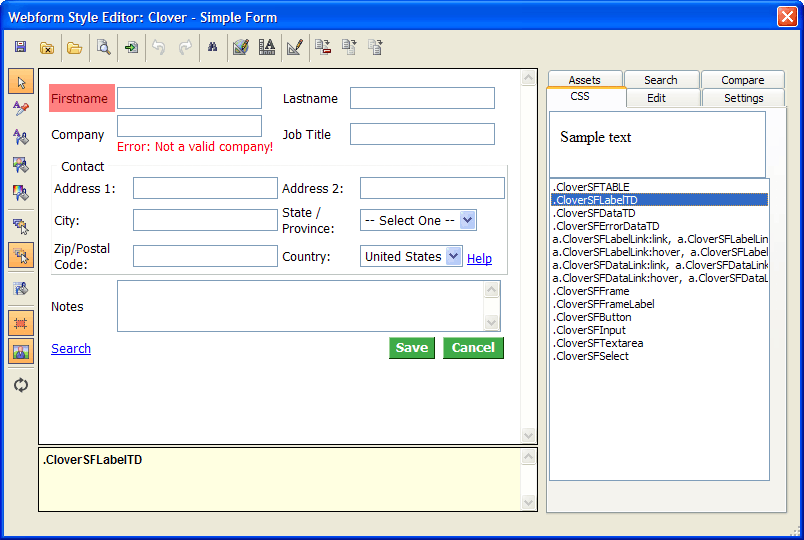
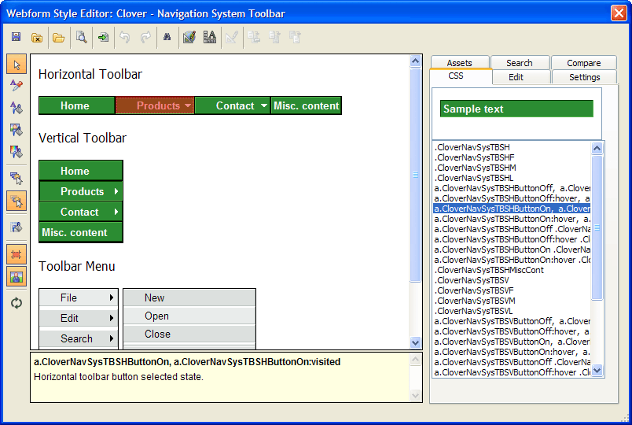
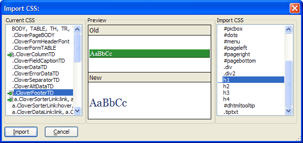

Webform Style Editor
The Webform Style Editor allows you to edit and preview the behavior of all styles in a CSS style sheet used for A5W pages.
Style Sheets : create, copy, edit, and merge style sheets
Preview: the way styles will appear with grids, search forms, detail view forms, and calendars
Colors : create colors, manage color palettes used on style sheets
Images : create, edit, manage images used on style sheets
Buttons : create buttons with the Webform Button Genie
To use the Webform Style Builder from the Web Projects Control Panel :
Open the Web Projects Control Panel.
Select Edit > Web Components Style Sheets... to display the Open Webform Style dialog.
Select a style and click Open to display the Webform Style Builder dialog:

Webform Style Builder Main Menu in Version 8
To use the Webform Style Builder from an open grid component:
Display the Grid > Properties menu.
Select Edit Style to display the Webform Style Builder dialog.
To use the Webform Style Builder from an open dialog component:
Display the Form > Properties menu.
Select Edit Style to display the Webform Style Builder dialog.
Display the Grid > Properties menu.
Click the
 button under the Layout Options > Style
name property.
button under the Layout Options > Style
name property.Click Select style.
Select the style sheet from the Styles list and click Open.
On the Webform Style Builder click Create New Style to display the New Webform Style dialog.
Enter a name for the style.
If you want to base this style on an existing style:
Check Copy from another style.
Click
 to select a style sheet to copy from the Open
Webform Style dialog.
to select a style sheet to copy from the Open
Webform Style dialog.Click Open.
Click OK.
Open or create a style sheet as described above.
Click Rename Style.
Enter the new name and click OK.
On the Webform Style Builder select the part of the style sheet that you wish to edit. The options are:
"Core Style"
"Simple Form"
"Navigation System Toolbar"
Click Open or Create.
The core style defines the properties of grid components.

Editing Simple Form Style Components
The simple form style is used by search forms, detail view forms, and dialog components.

Editing Navigation Component Style Properties
Horizontal and vertical navigation components use these style properties.

|
Tab |
Description |
|
CSS |
The CSS tab displays a list of the styles of the currently open style sheet. Select a style to identify its use in the preview pane of the Display tab. |
|
Edit |
The Edit tab allows you to set the properties of any style. Select the style in the CSS tab or the Preview window. The menus at right allow you to set font, background, and border attributes. |
|
Settings |
The Settings tab sets the cellspacing and cellpadding values used by grids, search forms, detail view forms, and calendars. |
|
Assets |
The Assets tab has two modes. Selecting "Colors" in the list box allows you to select, view, and edit the color palettes used by the current style sheet. Selecting "Images" in the list box allows you to select, view, and edit the images used by the current style sheet. |
|
Search |
The Search tab allows you to search for instances where a style is used by a component, and replace that style with a different style. |
|
Compare |
The Compare tab allows you to preview a second style sheet side by side with the currently loaded style sheet. |
|
Button |
Description |
|
|
Saves changes to the currently loaded style sheet. |
|
Closes the Webform Style Builder. | |
|
|
Allows you to select and open any component of the selected style sheet. |
|
|
Previews a grid component in the default browser. |
|
Imports one or more styles from a different style sheet. These styles replace styles in the current style sheet. See Importing a CSS File. | |
|
|
Undoes the last operation. |
|
|
Redoes the last operation. |
|
|
Displays the Search tab. |
|
Allows you to select multiple styles in the current style sheet and set their attributes in parallel with the <span class=Screen>Style Editor</span>. | |
|
Proportionally increases or decreases the font sizes uses in the style sheet. You can optionally choose to force the resulting point size values to be integer values. | |
|
Displays the <span class=Screen>Style Editor</span> , allowing you to edit the properties of the currently selected style. | |
|
Allows you to apply the style of a different format to the currently selected style. | |
|
Combines a second style with the currently selected style, eliminating duplicate attributes. | |
|
Combines a second style with the currently selected style, but preserves duplicate attributes. |
|
Button |
Description |
|
Copies the selected fill format. | |
|
|
Applies the fill format selected with the button. |
|
|
The paste color mode pastes the currently selected color on the Assets Color pane (if a color is selected) into whichever part of the style you select from the popup menu (font color, background, border: all, top, left, right, bottom). The image paste mode does likewise with an image (but only into the background). |
|
|
Allow you to select the single style of an element on top or choose from any of the multiple styles applied to the element's container(s). |
|
Edits the fill format selected with the button. | |
|
|
The overlay setting enables and disables the red tint on the Display tab that identifies selected styles. |
|
|
Enables and disables any background images on the Display tab used by the selected style. |
|
|
Refreshes the Display tab presentation of the style sheet. |
To edit a style.
Open or create a style sheet as described above.
Select the component of the style you want to edit.
Display the Edit tab of the Webform Style Editor.
Use the
button to select a style in the Preview
window.Optionally, select the style from the list in the Edit tab.
|
Functions |
Description |
|
|
Optionally, click on the vertical toolbar so that it changes to . This makes it easier to verify which style you have selected in the Preview window. |
|
Apply |
Saves and applies the changes that you have made to the style. |
|
Apply on Navigate |
Automatically saves and applies the changes that you have made to the style when you switch to a different style. |
|
Font Menu |
Allows you to set values for:
|
|
Background Menu |
Allows you to set values for:
|
|
Border Menu |
Allows you to set values for Top, Left, Bottom, and Right borders:
|
|
Margin Menu |
Allows you to set width values for:
|
|
Padding Menu |
Allows you to set width values for:
|
|
Position Menu |
Allows you to set values for:
|
|
Settings Menu |
Allows you to set values for navigation components:
|
|
Function |
Description |
|
Loads the Alpha Five Color Palette onto the vertical toolbar. This palette contains the system colors and the current database colors. | |
|
Loads a Custom Color Palette onto the vertical toolbar. The custom palette is defined by the <span class=Screen>Color Picker</span>. To add new colors, display the Color Picker and add them there. | |
|
Loads the Page Color Palette onto the vertical toolbar. This palette contains all the colors the used by the style. When you edit colors here, all instances of that color in the style sheet will be replaced. | |
|
|
Refreshes the Assets tab of the style sheet. |
|
Displays the <span class=Screen>Color Picker</span> , allowing you to edit the value of the currently selected color. | |
|
|
Loads the selected color value into the search field of the Search tab and displays the search results. |
|
Function |
Description |
|
|
Refreshes the Assets tab of the style sheet. |
|
|
Displays the Add Image dialog box. This allows you to navigate to, select, and name an image for inclusion in the style sheet. The name is used as the image's filename when it is saved into the style sheet directory. |
|
Displays the Replace Image dialog box. This allows you to navigate to, select, and name an image to replace a selected image. The name is used as the image's filename when it is saved into the style sheet directory. |
|
Function |
Description |
|
|
Initiates a search after you have entered a value into the Search For control. |
|
Replace With |
Enter a value that will replace the search value. |
|
Replace Selected |
This button is enabled if you have selected an entry in the search results list. It replaces the search value with the replace value in the selected style. |
|
Replace All |
Replaces the search value with the replace value in all styles. |
|
Edit Selected |
This button is enabled if you have selected an entry in the search results list. It opens the Style Editor to allow you to edit the selected style property. |
|
Edit All |
Allows you to modify the selected style property for all entries in the search results list. You must first make a selection of modes:
|
If you have opened a CSS file and attempt to import a second CSS file, the Import CSS dialog appears.

When you click Import, the default behavior is to add these styles to the existing style sheet.
Replacing a style - If you wish to replace any style in the Current CSS list, select it, and then select its replacement from the Import CSS list.
Reversing a replacement (before you click Import ) - If you do not want to replace a style in the Current CSS list, select it, and then select its "
" in the Import CSS list.
See Also
Creating Grid Components, Style Editor
Supported By
Alpha Five Version 7 and Above
Limitations
Web publishing applications only.